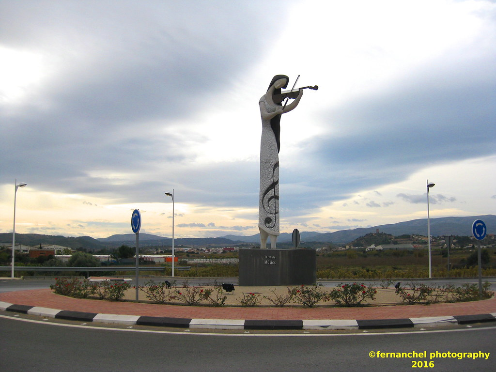

Montserrat es un municipio de la provincia de Valencia, en la Comunidad Valenciana, España. Se encuentra situado en la comarca de la Ribera Alta, a orillas del río Júcar. La localidad cuenta con una rica historia y patrimonio cultural, destacando su arquitectura tradicional y sus festividades locales.
Entre los lugares de interés se encuentran la Iglesia Parroquial de San Juan Bautista, que data del siglo XVIII, y la Casa de la Cultura, que alberga diversas actividades culturales y exposiciones. Además, Montserrat es conocida por su gastronomía, con restaurantes que ofrecen platos típicos de la región.
La localidad también es famosa por su entorno natural, con rutas de senderismo y espacios verdes que permiten disfrutar de la belleza del paisaje valenciano. Montserrat celebra diversas festividades a lo largo del año, siendo la Semana Santa y las fiestas patronales en honor a San Juan Bautista algunas de las más destacadas.